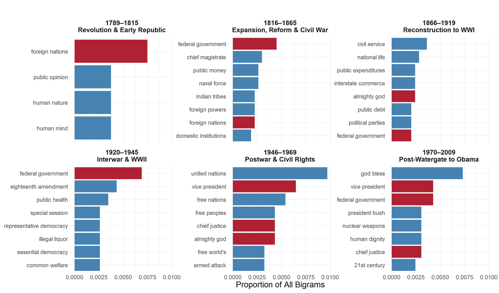

Analysis of the Sentiment, Language, and Readability of Presidential Inaugural Speeches, 1789-2009
Comparing the Sentiment, Language Use, and Readability Scores of Presidential Speeches Over Time
Abstract
This blog focuses on analyzing the inaugural speeches of U.S. presidents to examine how the language, sentiment used, and readability of presidential addresses have changed over time. By calculating readability scores using the Flesch-Kincaid formula and analyzing sentiment with the AFINN lexicon, we explore whether speeches from 1789 to 2009 have become easier or harder to understand, and how their emotional tone has evolved. Please note that President Van Buren, President Buchanan, President Garfield, and President Coolidge are missing from the dataset due to unavailable transcripts.
Sentiment Analysis Over Time
This interactive bar chart displays the average AFINN sentiment score of each U.S. presidential inaugural address over time. Bars are color-coded by sentiment strength, with bluer bars indicating more positive language and red tones indicating more negative sentiment. Hovering over each bar reveals additional details, including the president’s name, year of the address, and exact sentiment score.
While sentiment has remained mostly positive throughout history, we observe notably lower average sentiment during the mid-19th century, especially surrounding the Civil War era under Abraham Lincoln. A brief dip also appears in the early 20th century. More recently, sentiment peaked with George H. W. Bush’s 1989 inaugural address, which had the highest score in the dataset. Since then, average sentiment scores have gradually declined across subsequent presidencies, suggesting a rhetorical shift toward more neutral or somber tones in modern speeches.
The first figure uses an interactive plotly chart to allow readers to explore sentiment scores by hovering over each bar (“Plot (plotly)” n.d.). The color gradient, from blue to gray to red, was created using scale_fill_gradient2() in ggplot2 (Wickham 2024).
Normalized Bigram Frequency by Era

This faceted bar chart highlights the most frequently used bigrams (two-word phrases) in inaugural speeches across six major historical eras. Frequencies are normalized to account for differences in era length and speech length, so bars represent the proportion of all bigrams within that era. Red bars indicate bigrams that appear in multiple eras, suggesting persistent rhetorical themes (such as “federal government” or “foreign nations”).
A key trend revealed here is how certain bigrams like “federal government” and “foreign nations” recur across multiple eras, showing the enduring importance of governance and international relations. However, top bigrams also shift to reflect evolving national concerns: for example, “united nations” emerges as the most dominant phrase during the Postwar & Civil Rights era (1946–1969), while “god bless” and “vice president” gain prominence in the Post-Watergate to Obama era (1970–2009). This suggests a rhetorical turn toward both global institutions and more personal or moral language in the modern period.
A key trend revealed here is how certain bigrams like “federal government” and “foreign nations” recur across multiple eras, showing the enduring importance of governance and international relations. However, the top bigrams also shift to reflect evolving national concerns:
In the Reconstruction to WWI era (1866–1919), bigrams like “civil service” and “public expenditures” reflect growing attention to internal administration and government reform.
During the Interwar & WWII period (1920–1945), phrases such as “eighteenth amendment” and “illegal liquor” reference Prohibition.
In the Postwar & Civil Rights era (1946–1969), the emergence of phrases like “armed attack” and “free nations” indicates heightened attention to Cold War tensions and the defense of global democracy.
Finally, in the Post-Watergate to Obama era (1970–2009), we see phrases like “nuclear weapons” and “god bless,” suggesting a shift toward national security concerns, as well with moral and religious appeals in presidential rhetoric. This era shows a mix of national security concerns and attempts to bring people together using faith during times of global and domestic uncertainty.
These changes underscore how presidential language not only reflects shared values, but also adapts to shifting historical and political priorities.
Because each panel shows a different historical era, bars needed to be reordered within each facet. This was accomplished using reorder_within() from the tidytext package, following the solution described by Julia Silge (Silge 2020). Facet label formatting was adapted using advice from Kassambara (Kassambara 2021), and the scales = “free_y” setting was enabled to allow y-axes to scale independently (“ggplot2 facet_grid free scales” 2010).
Mean Sentence Length over time
Figure 3: Mean sentence length of each president’s inaugural speech over time
This interactive bar chart displays the mean sentence length of the presidential inaugural speeches of U.S presidents that served from 1789 to 2009. By hovering over each bar, the user can view the president’s name, year of the inaugural address, and the mean sentence length of the inaugural address. The bars are color-coded by different shades of blue, which vary depending on the mean sentence length.
The mean sentence length measures the average number of words per sentence in a presidential inaugural speech. By measuring the mean sentence length of an speech, we can get a rough idea of how complex the speech’s sentences are. For instance, if the mean sentence length is long, it may indicate a more complex and harder to understand sentence while a shorter mean sentence length may indicate otherwise. It is important to note that the mean sentence length measures the complexity of the sentence structure based on its length, but it doesn’t measure the complexity of each individual word.
As shown on the bar chart, the mean sentence length of presidential inaugural speeches seem to fluctuate slightly. However, we can observe an overall trend: the mean sentence length decreases over time. This shows that the sentence structure of U.S. presidents’ inaugural speeches have become less complex over time. This may be due wanting to make inaugural speeches more accessible to the public (Liberman 2011)
The first figure uses an interactive plotly chart to allow readers to explore the mean sentence length by hovering over each bar (“Plot (plotly)” n.d.). The color gradient, different shades of blue, was created using scale_fill_gradient2() in ggplot2 (Wickham 2024).
Mean Sentence Length vs. Sentiment
Figure 8: Mean sentence length vs. sentiment of presidential inaugural speeches
Figure 8 displays an interactive clustering of presidential inaugural speeches based on the average sentiment score and the mean sentence length. By hovering over each data point, the user can view the president’s name, sentiment score, Flesch-Kincaid score and the cluster that president’s inaugural speech belongs to.
Clusters description:
Cluster 1: Presidents with moderately low mean sentence length have neutral inaugural speeches.
Cluster 2: Presidents with high mean sentence length have considerably positive inaugural speeches.
Cluster 3: Presidents with medium mean sentence length have positive inaugural speeches.
Cluster 4: Presidents with the highest mean sentence length have more positive inaugural speeches.
Cluster 5: Presidents with low mean sentence length have neutral, but leaning toward negative, inaugural speeches
Cluster 6: Presidents with the lowest mean sentence length have neutral inaugural speeches.
Readability Analysis
Introduction
Readability analysis helps us understand how easy (or difficult) a text is to read. Two common measures are the Flesch Reading Ease (FRE) and Flesch-Kincaid Grade Level (FKGL)
Flesch Reading Ease (FRE)
\[ \text{FRE} = 206.835 - 1.015 \times \left( \frac{\text{Total Words}}{\text{Total Sentences}} \right) - 84.6 \times \left( \frac{\text{Total Syllables}}{\text{Total Words}} \right) \]
This score rates text on a 0 to 100 scale. A higher score means the text is easier to read.
- 100 - 90: 5th Grade
- 90 - 80: 6th Grade
- 80 - 70: 7th Grade
- 70 - 60: 8th & 9th Grade
- 60 - 50: 10th to 12th Grade
- 50 - 30: College
- 30 - 10: College Graduate
- 10 - 0: Professional
FRE vs. Sentiment
To better understand the relationship between writing style and emotional tone in the presidential inaugural addresses, we compare the Flesch Reading Ease scores with sentiment scores calculated for each speech.
The Flesch score measures how easy a text is to read, while the sentiment score captures the overall positivity or negativity of the language. By analyzing these two metrics together, we can apply clustering techniques to group speeches with similar readability and sentiment profiles. These clusters help us identify distinct subgroups of inaugural addresses — for example, groups of speeches that are both highly readable and optimistic, or more complex and somber — offering new insights into how presidents have tailored their language to the moment in history.
Figure 9: Flesch Reading Ease vs. Sentiment Scores from inaugural speech.
Using the clustering analysis, some light interpretation can be made from the groupings.
Cluster 1: Presidents have average sentiment score with low readability.
Cluster 2: Presidents have higher sentiment score with low readability.
Cluster 3: Presidents have higher sentiment score with high readability.
Cluster 4: Presidents have low sentiment scores with high readability.
Cluster 5: Presidents on the lower end of the sentiment score spectrum. Readability ranges from standard to easy.
Cluster 6: Presidents in this cluster have the highest sentiment score spectrum. Readability ranges from 30-40.
Flesch-Kincaid Grade Level (FKGL)
\[ \text{FKGL} = 0.39 \times \left( \frac{\text{Total Words}}{\text{Total Sentences}} \right) + 11.8 \times \left( \frac{\text{Total Syllables}}{\text{Total Words}} \right) - 15.59 \]
This score estimates the U.S. school grade level needed to understand the text and corresponds with a U.S. grade level. Due to this formulas construction, the score does not have an upper bound.
For example:
- A score of 8.0 means the average 8th grader should be able to understand it.
- A score of 12.0 suggests it matches a high school senior’s reading level.
FKGL vs. Sentiment
In addition to examining readability through the Flesch score, we also analyze the Flesch-Kincaid Grade Level (FKGL) in relation to sentiment scores for each inaugural address. The FKGL estimates the U.S. school grade level required to understand a speech, providing a direct measure of textual complexity. By comparing FKGL to sentiment scores, we explore how the sophistication of presidential language interacts with the emotional tone conveyed. Using clustering methods to group speeches based on their grade level and sentiment characteristic offering a nuanced view of how different presidents have communicated their visions to the nation.
Figure 10: This chart displays Flesch-Kincaid and sentiment scores of president speech values.
In this example, clustering analysis using Flesch-Kincaid vs Sentiment values does not yeild any meaningful results. Clustering appears to be driven entirely by the sentiment axis and form vertical “layers” that reflect sentiment values alone.
This suggests that the algorithm is not detecting any significant structure in the Flesch-Kincaid axis, and as a result, the clustering lacks any interpretive value.
FKGL vs. Time
We also examine the relationship between the Flesch-Kincaid Grade Level (FKGL) and time to track how the complexity of presidential inaugural speeches has changed. Overall, we find a clear trend that speech complexity has decreased over time, with more recent presidents using simpler, more accessible language compared to earlier eras.
`geom_smooth()` using formula = 'y ~ x'Figure 11: This chart displays Flesch-Kincaid over time illustrating the complexity of inaugural addresses.
Possible explanations include:
- Initially, the audience of the inaugural speech was composed of congressional leaders.
- The first inaugural speech to a public crowd was by James Monroe in 1817.
- The growing emphasis on mass communication, as presidents began speaking to a broader and more diverse audience.
- The influence of modern media, which favors shorter, clearer messaging that resonates quickly with the public.
| President | Year | Flesch-Kincaid Score |
|---|---|---|
| George Bush | 1989 | 7.15 |
| Lyndon Baines Johnson | 1965 | 7.54 |
| Dwight D. Eisenhower | 1957 | 8.09 |
| Franklin D. Roosevelt | 1945 | 8.89 |
| Richard Milhous Nixon | 1969 | 9.24 |
Figure 11a: Top 5 presidents with lowest Flesch-Kincaid scores
| President | Year | Flesch-Kincaid Score |
|---|---|---|
| John Adams | 1797 | 28.74 |
| George Washington | 1789 | 28.43 |
| James Madison | 1809 | 25.57 |
| Thomas Jefferson | 1805 | 24.19 |
| Zachary Taylor | 1849 | 23.77 |
Figure 11b: Top 5 presidents with the highest Flesch-Kincaid scores
Figure 10a displays a table ranking the five presidents with the lowest Flesch-Kincaid Grade Level scores between 1789 and 2009. Similarly, Figure 10b displays a table ranking the five presidents with the highest Flesch-Kincaid Grade Level scores. By looking at the years, we can see how the highest scores correspond to the presidents in the first two centuries while the lowest scores correspond to the presidents in the more recent centuries. This indicates that the language used in inaugural speeches has become simpler and more accessible over time.
Understanding the relationship between: Flesch Reading Ease (FRE) & Flesch-Kincaid Grading Level (FKGL)
To get a better understanding of the relationship between the Flesch Reading Ease (FRE) and the Flesch-Kincaid Grade Level (FKGL), it is helpful to plot them together on a scatterplot.
`geom_smooth()` using formula = 'y ~ x'Figure 12: This chart displays the inverse relationship between the Flesch-Kincaid and Flesch Reading Ease formulas.
The Flesch Reading Ease (FRE) and the Flesch-Kincaid Grade Level (FKGL) have an inverse relationship because they are based on similar textual features—sentence length and word complexity—but use opposing scales to express readability.
\[ \text{FRE} = 206.835 - 1.015 \times \left( \frac{\text{Total Words}}{\text{Total Sentences}} \right) - 84.6 \times \left( \frac{\text{Total Syllables}}{\text{Total Words}} \right) \] \[ \text{FKGL} = 0.39 \times \left( \frac{\text{Total Words}}{\text{Total Sentences}} \right) + 11.8 \times \left( \frac{\text{Total Syllables}}{\text{Total Words}} \right) - 15.59 \] As sentence length and syllables per word increase, FRE scores decrease (the text becomes harder to read), while FKGL scores increase (the grade level rises). This opposing behavior is why they have an inverse relationship: when one goes up, the other tends to go down.
Sentiment and Flesch-Kincaid Scores Change among Presidents that Served Two Terms
Figure 5: Sentiment score change from a president’s first term to their second term
Figure 6: Flesch-Kincaid score change from a president’s first term to their second term
Difference Score
| President | Sentiment Score Difference | Flesch-Kincaid Score Difference |
|---|---|---|
| George Washington | -0.74 | -11.28 |
| Thomas Jefferson | -0.10 | 4.93 |
| James Madison | -0.99 | -7.53 |
| James Monroe | -0.39 | 2.03 |
| Andrew Jackson | -0.23 | -2.43 |
| Abraham Lincoln | 0.06 | -1.88 |
| Ulysses S. Grant | -0.38 | 1.03 |
| Grover Cleveland | -0.36 | -0.82 |
| William McKinley | -0.19 | -3.13 |
| Woodrow Wilson | 0.65 | 0.12 |
| Franklin D. Roosevelt | 0.09 | -1.01 |
| Dwight D. Eisenhower | 0.02 | -2.25 |
| Richard Milhous Nixon | 0.15 | 3.06 |
| Ronald Reagan | -0.04 | 0.64 |
| William Clinton | 0.33 | 0.45 |
| George W. Bush | 0.09 | 1.29 |
Figure 7: Sentiment score and Flesch-Kincaid Scores change across different terms of presidents that served two terms
Figure 5 displays an interactive scatter plot showing presidents’, who served two terms, first term sentiment score and second term score. Similarly, Figure 6 shows presidents’ first term Flesch-Kincaid score and second term Flesch-Kincaid score. By hovering over each data point, the user can view the president’s name as well as their respective scores. Each president is colored differently.
By examining the sentiment and Flesch-Kincaid scores across different terms, we can explore how presidential leadership and political rhetoric evolve after serving a first term. This is important because it may reveal a correlation between a president’s experience and changes in language complexity or emotional tone
To see this more clearly, Figure 7 displays a table showing the changes in sentiment scores and Flesch-Kincaid scores for all presidents that served two terms. This will facilitate determining whether their tone became more positive or negative and whether their language became more complex or simpler across different terms.
Sentiment Score difference:
- Positive Difference Value: The second-term inaugural speech was more postive than their first term inaugural speech.
- Negative Difference Value: The second-term inaugural speech was less postive or more negative than the first term inaugural speech.
- Zero or close to Zero Difference Value: The sentiment/tone of the inaugural speech remained pretty consistent.
Flesch-Kincaid Score Difference:
- Positive Difference Value: The second-term inaugural speech was more complex than the first term inaugural speech.
- Negative Difference Value: The second-term inaugural speech was simpler and easier to understand than the first term inaugural speech.
- Zero or close to Zero Difference Value: The complexity of the inaugural speech remained pretty consistent.
References
“ggplot2 facet_grid free scales” (2010), Stack Overflow, Forum post, Available at https://stackoverflow.com/questions/3685285/ggplot2-facet-grid-free-scales.
Kassambara, A. (2021), “How to change ggplot facet labels,” Online tutorial, Available at https://www.datanovia.com/en/blog/how-to-change-ggplot-facet-labels/.
“Plot (plotly)” (n.d.). Shiny, vignette, Available at https://shiny.posit.co/r/components/outputs/plot-plotly/.
Silge, J. (2020), “Fct_reorder only working properly for one facet,” Stack Overflow, Forum post, Available at https://stackoverflow.com/questions/61961370/fct-reorder-only-working-properly-for-one-facet.
Wickham, H. (2024), “Scale gradient functions in ggplot2,” Online documentation, Available at https://ggplot2.tidyverse.org/reference/scale_gradient.html.